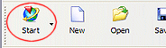
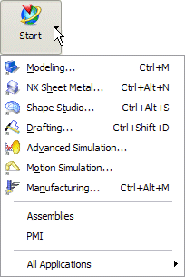

NX 应用模块
NX 按照各自的功能划分为几个应用模块：
|
|
“基本环境”应用模块提供了如打开文件及其它一些基本操作 |
|
|
“建模”应用模块提供了创建实体模型、曲面、曲线等功能 |
|
“制图”应用模块允许用户建立与三维模型相关联的二维工程图 |
|
|
|
“装配”应用模块让您创建引用一个或多个其它部件的部件文件，并在装配产品中描述各自空间上的关系 |
|
“加工”应用模块让您创建加工实体、曲面和曲线的 NC 机床程序代码。 |
在 NX 标准工具条上，通过如下图所示的“开始”按钮，便可方便在各个应用模块间进行切换。

基本的应用模块通常在顶层列出，若用户需要选用更多高级模块，则可进入“所有应用模块”级联菜单中进行选择。

|
注释 |
所列出的应用模块可能根据您所购买的许可证有所不同。 |